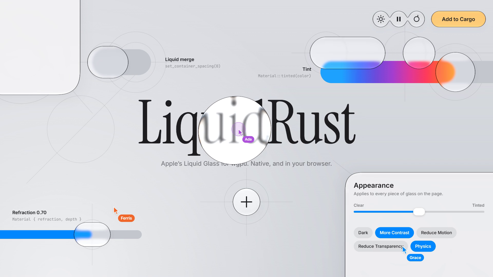

Interactive demo of liquid-rust. Three scripted cursors use the controls until you touch the page. Drag the round lens over the title, flip the Liquid merge switch, drag either slider, open the plus menu, and use the Appearance panel for dark mode, contrast, reduced motion and the iOS 27 transparency slider. Keys: Space pauses the cursors, D dark, C contrast, M reduce motion, T reduce transparency, P physics.

WebGPU isn’t available in this browser. Open the page in Chrome, Edge or Safari 26 to touch the glass, or watch the recording.